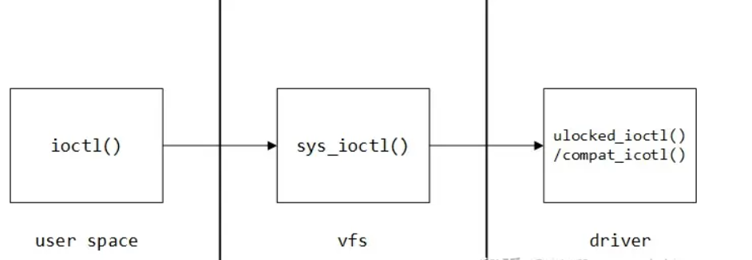

字符设备驱动¶
字符设备是最常见的设备，这种设备的读写可以直接进行而无需经过缓冲区。从用户态的角度来看，一个字符设备本质上就是一个文件，进程可以通过标准I/O操作来访问字符设备。
字符设备驱动框架如图所示：

内核使用struct cdev结构体来描述一个字符设备：
struct cdev {
struct kobject kobj;
struct module *owner;
struct file_operations *ops;
struct list_head list;
dev_t dev;
unsigned int count;
};
快速参考¶
#include <linux/types.h>
dev_t devID;
int MAJOR(dev_t dev);
int MINOR(dev_t dev);
dev_t MKDEV(unsigned int major, unsigned int minor);
#include <linux/fs.h>
int register_chrdev_region(dev_t first, unsigned int count, char *name);
int alloc_chrdev_region(dev_t *dev, unsigned int firstminor, unsigned int count, char *name);
void unregister_chrdev_region(dev_t first, unsigned int count);
int register_chrdev(unsigned int major, const char *name, struct file_operations *fops);
int unregister_chrdev(unsigned int major, const char *name);
struct file_operations;
struct file;
struct inode;
#include <linux/cdev.h>
struct cdev *cdev_alloc(void);
void cdev_init(struct cdev *dev, dev_t num, unsigned int count);
int cdev_add(struct cdev *cdev, dev_t num, unsigned int count);
void cdev_del(struct cdev *dev);
#include <linux/kernel.h>
container_of(pointer, type, field);
#include <asm/uaccess.h>
unsigned long copy_from_user(void *to, const void *from, unsigned long count);
unsigned long copy_to_user(void *to, const void *from, unsigned long count);
设备号初始化¶
字符设备通过主、次设备号来标识。主设备号用来识别设备对应的驱动程序，因为现代Linux内核允许多个驱动共享主设备号，所以还需要次设备号用于正确确定设备文件所指向的设备。
dev_t数据类型就表示一个设备号。宏MAJOR、MINOR用于获取一个dev_t类型的主、次设备号。
设备号的注册与卸载有两种方式：手动分配与动态分配。
- 手动分配：
该函数用于设备号已知的场景，仅在教学演示的时候有意义，因为你无法确定其他机器上该设备号是否被占用。
- 动态分配：
int alloc_chrdev_region(dev_t *dev, unsigned baseminor, unsigned count, const char *name)
void unregister_chrdev_region(dev_t first, unsigned count)
baseminor：次设备号的起始值，一般为0。
推荐使用该函数由内核动态分配设备号。
file_operations结构体¶
struct file_operations结构体中的函数指针是字符设备驱动程序设计的主体内容。这些函数会在应用程序调用诸如read()、write()等系统调用时被内核调用。
结构体中最基本的函数有open()、release()、read()、write()，其实就是对应文件的打开、关闭、读和写。
由于用户空间不能直接访问内核空间的内存，因此需要借助两个函数完成通信：
unsigned long copy_from_user(void *to, const void *from, unsigned long count);
unsigned long copy_to_user(void *to, const void *from, unsigned long count);
cdev结构体¶
struct cdev结构体用来描述一个字符设备：
struct cdev {
struct kobject kobj; //用来支持设备模型，每个内核对象（设备对象，驱动对象）都是kobj
struct module *owner;//指向模块的指针，一般使用THIS_MODULE指针即可。
const struct file_operations *ops; //字符设备向上提供的回调函数的接口。
struct list_head list;//内核的对象的管理链理。
dev_t dev; //字符设备的设备号。
unsigned int count; //设备的个数。
}__randomize_layout;
cdev_init()函数可以将已经定义好的file_operations结构体与struct cdev结构体关联起来：
初始化完毕之后，调用cdev_add()函数将struct cdev对象添加到内核管理链表中：
自动创建设备节点¶
-
创建设备类：
-
创建设备节点：
ioctl¶
大部分的驱动除了具备基本的读写功能之外，还需要对设备有控制能力，这些操作通过ioctl()函数来实现：

用户空间的ioctl()：int ioctl(int fd, unsigned long request, ...)。
驱动程序的ioctl()：long (*unlocked_ioctl)(struct file *filep, unsigned int cmd, unsigned long args)。
ioctl()方法的 cmd 参数是用户与驱动交流的"协议"，内核提供了统一的命名格式，将 32 位的 int 型划分成 4 个段：
-
dir：表示数据传输方向，占据 2 个 bit，可以为_IOC_NONE、_IOC_READ、IOC_WRITE、_IOC_READ|_IOC_WRITE，分别表示无数据、读数据、写数据、读写数据。
-
type：设备类型，占据 8bit，为任意的 char，作用是让
ioctl命令有唯一的设备标识。 -
nr：编号，为任意的 unsigned char，多个
ioctl命令递增。 -
size：指定了 arg 参数的数据类型和长度，ARM 架构为 14bit。
内核提供了宏以生成上述格式的ioctl()命令：
#define _IOC(dir,type,nr,size) \
(((dir) << _IOC_DIRSHIFT) | \
((type) << _IOC_TYPESHIFT) | \
((nr) << _IOC_NRSHIFT) | \
((size) << _IOC_SIZESHIFT))
为了方便使用，可以用衍生宏_IOC()来直接定义ioctl()命令：
#define _IO(type,nr) _IOC(_IOC_NONE,(type),(nr),0)
#define _IOR(type,nr,size) _IOC(_IOC_READ,(type),(nr),(_IOC_TYPECHECK(size)))
#define _IOW(type,nr,size) _IOC(_IOC_WRITE,(type),(nr),(_IOC_TYPECHECK(size)))
#define _IOWR(type,nr,size) _IOC(_IOC_READ|_IOC_WRITE,(type),(nr),(_IOC_TYPECHECK(size))
_IO：不带参数的ioctl命令
_IOW：带写参数的ioctl命令
_IOR：带读参数的ioctl命令
_IOWR：带读写参数的ioctl命令
高级I/O模型¶
Linux 一共提供五种 I/O 模型：
-
阻塞 I/O 模型：
- 特点：应用程序发起 I/O 操作后会被阻塞，直到数据准备就绪并被复制到应用程序的缓冲区中，此期间应用程序无法执行其他任务。
- 底层原理：依赖内核来管理数据的准备和传输。
- 优势：编程模型简单，不消耗 CPU 资源。
- 劣势：无法并发处理其他任务。
- 适用场景：简单的文件读写操作，不要求高并发的应用。
-
非阻塞 I/O 模型：
- 特点：应用程序发起 I/O 操作后立即获取一个返回值，应用程序可以继续执行其他任务。
- 底层原理：应用程序每次发起 I/O 操作，底层都需要检查 I/O 状态。
- 优势：不会因为 I/O 阻塞，提高了响应性。
- 劣势：应用程序需要不断轮询 I/O 状态，浪费 CPU 资源。
- 适用场景：需要提高程序响应性的情况。

-
I/O 多路复用：
- 特点：单个进程可以监视多个 I/O 请求(select、poll、epoll)。
- 底层原理：应用程序发起 I/O 请求后，内核会监控每个请求的状态，当某个 I/O 就绪后，通知应用程序。
- 优势：可以同时处理多个 I/O 请求，提高了程序的并发处理能力。
- 劣势：编程模型复杂，需要手动处理 I/O 事件。
- 适用场景：高并发网络服务
-
信号驱动 I/O 模型：
- 特点：应用程序发起 I/O 请求后立即返回，内核检查 I/O 状态，在数据就绪时通过信号通知应用程序。
- 底层原理：内核通过信号机制来通知应用程序 I/O 事件。
- 优势：可以实现异步 I/O，提高了程序的响应能力。
- 劣势：在应用程序中处理信号，只能实现简单的并发。
- 适用场景：对异步通信要求较高的场景。

-
异步 I/O 模型：
- 特点：应用程序发起 I/O 请求后立即返回，当 I/O 操作完成后通知应用程序。
- 底层原理：依赖内核的异步通信机制。
- 优势：完全非阻塞，应用程序可以处理其他任务。
- 劣势：编程模型复杂。
- 适用场景：大规模数据处理应用。

简单示例¶
#include <linux/module.h>
#include <linux/init.h>
#include <linux/fs.h>
#include <linux/version.h>
#include <linux/device.h>
#include <linux/cdev.h>
static unsigned int major; /* major number for device */
static struct class *dummy_class;
static struct cdev dummy_cdev;
int dummy_open(struct inode * inode, struct file * filp)
{
pr_info("Someone tried to open me\n");
return 0;
}
int dummy_release(struct inode * inode, struct file * filp)
{
pr_info("Someone closed me\n");
return 0;
}
ssize_t dummy_read (struct file *filp, char __user * buf, size_t count,
loff_t * offset)
{
pr_info("Nothing to read guy\n");
return 0;
}
ssize_t dummy_write(struct file * filp, const char __user * buf, size_t count,
loff_t * offset)
{
pr_info("Can't accept any data guy\n");
return count;
}
struct file_operations dummy_fops = {
open: dummy_open,
release: dummy_release,
read: dummy_read,
write: dummy_write,
};
static int __init dummy_char_init_module(void)
{
struct device *dummy_device;
int error;
dev_t devt = 0;
/* Get a range of minor numbers (starting with 0) to work with */
error = alloc_chrdev_region(&devt, 0, 1, "dummy_char");
if (error < 0) {
pr_err("Can't get major number\n");
return error;
}
major = MAJOR(devt);
pr_info("dummy_char major number = %d\n",major);
/* Create device class, visible in /sys/class */
dummy_class = class_create(THIS_MODULE, "dummy_char_class");
if (IS_ERR(dummy_class)) {
pr_err("Error creating dummy char class.\n");
unregister_chrdev_region(MKDEV(major, 0), 1);
return PTR_ERR(dummy_class);
}
/* Initialize the char device and tie a file_operations to it */
cdev_init(&dummy_cdev, &dummy_fops);
dummy_cdev.owner = THIS_MODULE;
/* Now make the device live for the users to access */
cdev_add(&dummy_cdev, devt, 1);
dummy_device = device_create(dummy_class,
NULL, /* no parent device */
devt, /* associated dev_t */
NULL, /* no additional data */
"dummy_char"); /* device name */
if (IS_ERR(dummy_device)) {
pr_err("Error creating dummy char device.\n");
class_destroy(dummy_class);
unregister_chrdev_region(devt, 1);
return -1;
}
pr_info("dummy char module loaded\n");
return 0;
}
static void __exit dummy_char_cleanup_module(void)
{
unregister_chrdev_region(MKDEV(major, 0), 1);
device_destroy(dummy_class, MKDEV(major, 0));
cdev_del(&dummy_cdev);
class_destroy(dummy_class);
pr_info("dummy char module Unloaded\n");
}
MODULE_INIT(dummy_char_init_module);
MODULE_EXIT(dummy_char_cleanup_module);
MODULE_AUTHOR("John Madieu <john.madieu@gmail.com>");
MODULE_DESCRIPTION("Dummy character driver");
MODULE_LICENSE("GPL");